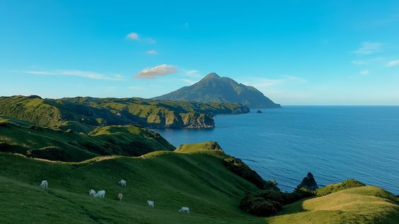
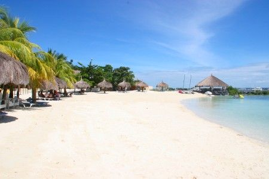

Latest News
Discover the Hidden Gems of Batanes

If you're looking for a peaceful and picturesque vacation spot, look no further than Batanes. This group of islands in the northernmost part of the Philippines offers stunning landscapes, including rolling hills, rocky cliffs, and crystal-clear waters. It's a great place to escape the hustle and bustle of city life and enjoy some quiet relaxation.
But that's not all Batanes has to offer. You'll also find a rich cultural heritage here, with traditional Ivatan houses and local delicacies like coconut crab and turmeric rice. Plus, the friendly locals are always happy to show visitors around and share their way of life.
So if you're looking for a unique and unforgettable vacation experience, make sure to put Batanes on your list.
Read more
Experience Paradise on Siargao Island

If you're a fan of surfing and beach adventures, Siargao Island is the place to be this summer. This tropical paradise is known for its world-class waves and stunning scenery, with palm-lined beaches and turquoise waters that will take your breath away.
But there's more to Siargao than just surfing. You can also explore the island's mangrove forests, take a dip in the natural pools, or enjoy some delicious fresh seafood at one of the local restaurants. And if you're feeling adventurous, you can even take a day trip to nearby Sohoton Cove, where you can swim through a cave and explore hidden lagoons.
So why wait? Book your trip to Siargao now and experience the ultimate island adventure.
Read more
Discover the Rich History and Culture of Cebu

If you're a history buff or just interested in learning more about Philippine culture, Cebu is the perfect vacation destination for you. This vibrant city is home to a wealth of historical sites and cultural attractions, from the iconic Magellan's Cross to the colorful Sinulog Festival.
But Cebu isn't just about history and culture. It's also a great place to relax and unwind, with beautiful beaches and delicious local cuisine. And if you're up for an adventure, you can even go canyoneering at the nearby Kawasan Falls.
So if you want to immerse yourself in the beauty and culture of the Philippines, make sure to add Cebu to your list of must-visit destinations.
Read more